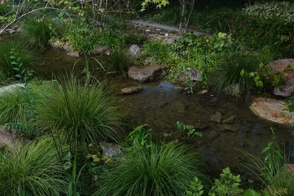
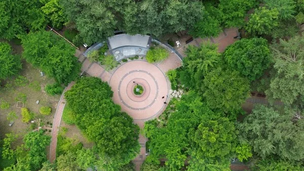
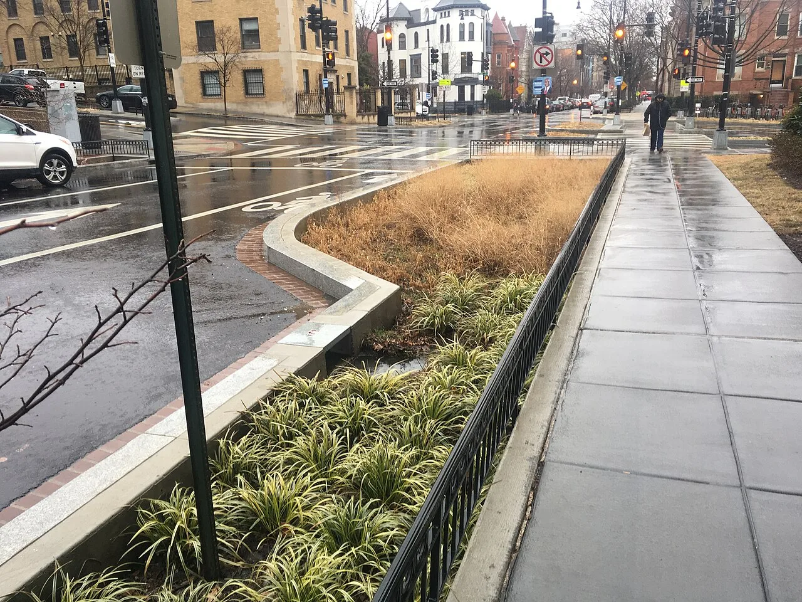

▲ 서울 동대문구 장평근린공원에 조성된 '빌리브 인 드림-파크' 빗물정원. 포르쉐코리아는 이 프로젝트로 2026 서울특별시 정원도시상 기업동행상을 수상했다
1. 노후 공원이 빗물정원으로... 포르쉐코리아, 정원도시상 기업동행상 수상
포르쉐코리아가 서울 동대문구 장평근린공원에 조성한 빗물정원 '빌리브 인 드림-파크(Bee'lieve in Dreams – Park)'로 '2026 서울특별시 정원도시상' 기업동행상을 수상했다. 시상식은 9월 7일 서울시청에서 열렸으며, 올해는 총 23개 수상작이 선정됐다. 서울특별시 정원도시상은 도시 녹화와 정원 조성에 기여한 시민·단체·기업의 우수 사례를 발굴해 시민 중심의 정원문화 확산을 장려하기 위해 마련된 상이다.
포르쉐코리아는 2024년 11월 서울그린트러스트와 함께 노후화된 장평근린공원 일대를 정비하고, 약 400㎡ 규모의 빗물정원을 새로 조성했다. 자생종을 중심으로 식재하고 빗물이 자연스럽게 머물며 순환하는 계류형 구조를 적용해, 다양한 동식물이 공존할 수 있는 환경을 마련한 것이 특징이다.

▲ 빗물정원 내부. 자생종 중심 식재와 계류형 구조로 빗물이 자연스럽게 머물다 순환하도록 설계됐다 ⓒ 포르쉐코리아
2. 빗물정원이란 무엇인가
빗물정원(rain garden)은 빗물이 곧바로 하수도로 빠져나가지 않고 땅속으로 서서히 스며들도록 설계된 저류형 녹지 공간을 말한다. 도심의 불투수 포장면이 늘어날수록 국지성 호우 시 배수 부담이 커지고, 동시에 토양 함수량은 줄어드는 문제가 발생하는데, 빗물정원은 이런 문제를 완화하는 대표적인 도시 그린인프라로 꼽힌다. 계류형 구조를 갖춘 빗물정원은 다양한 수생·습지 식물과 곤충의 서식처 역할도 겸한다.
📍 빗물정원(바이오스웨일)이란
빗물정원은 흔히 '바이오스웨일(bioswale)'이라고도 불리며, 완만한 경사와 식생대를 이용해 빗물을 걸러내고 지하로 서서히 스며들게 하는 조경 기법이다. 해외 주요 도시에서도 보도블록 사이, 공원, 주차장 인근에 폭넓게 조성되고 있으며, 도시 열섬 완화와 생물 다양성 증진 효과가 함께 보고된다.

▲ 해외 도심에 조성된 빗물정원(바이오스웨일)의 예. 식생대와 완만한 경사로 빗물을 걸러내고 서서히 흡수시킨다 ⓒ Wikimedia Commons
3. 2021년부터 이어온 '빌리브 인 드림' 캠페인
이번 수상은 포르쉐코리아가 2021년부터 서울그린트러스트와 함께 진행해온 도시 양봉·녹지 확대 캠페인 '빌리브 인 드림(Bee'lieve in Dreams)'의 연장선에서 나왔다. 포르쉐코리아는 이 프로젝트를 통해 도심 노후 공원을 정비하고, 조성 이후에도 지역 주민과 함께 식물과 생물 다양성을 관찰·기록하는 '우리동네 생태탐사꾼 클럽'을 운영하며 도시 야생벌을 위한 비하우스(Bee House)를 설치하는 등 보전 활동을 꾸준히 이어왔다.
| 시기 | 내용 |
|---|---|
| 2021년 | 서울그린트러스트와 도시 양봉·녹지 캠페인 '빌리브 인 드림' 시작 |
| 2024년 11월 | 장평근린공원에 1호 빗물정원(약 400㎡) 조성 |
| 2025년 | 장안근린공원에 2호 '느린 정원' 조성 |
| 2026년 | 경기 수원 영흥숲공원에 3호 조성 예정 |
| 2026년 9월 | 1호 빗물정원, 서울특별시 정원도시상 기업동행상 수상 |
포르쉐코리아 마티아스 부세 대표는 수상 소감으로 "지역 커뮤니티와 함께 노후화된 녹지를 개선하는 프로젝트"라며 "도심 생태 환경의 긍정적 변화를 위한 노력이 인정받아 기쁘다"고 밝혔다. 관련 소식은 포르쉐코리아 공식 홈페이지에서 확인할 수 있다. 바로가기
4. 수입차 브랜드들의 ESG·지역사회 활동 경쟁
최근 몇 년 새 국내 수입차 브랜드들 사이에서 환경·지역사회 기여 활동이 눈에 띄게 늘고 있다. 볼보자동차코리아는 '지구의 날'에 맞춰 전국 전시장과 서비스센터에서 필수 조명을 제외한 실내외 조명을 1시간 동안 끄는 소등 캠페인을 진행하고 있으며, 콩고민주공화국·르완다 광산 근로자의 근로·생활 여건 개선을 지원하는 '베터 마이닝(Better Mining)' 프로그램에도 참여하고 있다. BMW코리아 역시 프리즈 서울 같은 문화 행사 후원과 함께 지역사회 프로그램을 꾸준히 확대해왔다.
이런 흐름 속에서 포르쉐코리아의 빗물정원 프로젝트는 단발성 기부나 행사 후원이 아니라, 2021년부터 5년 넘게 같은 파트너(서울그린트러스트)와 함께 지역을 특정해 꾸준히 녹지를 늘려온 사례라는 점에서 차별점이 있다는 평가가 나온다. 프로젝트가 매년 1곳씩 새로운 부지로 확장되고 있다는 점도 장기적인 실행력을 보여주는 대목이다.

▲ 서울숲공원 입구. 서울시내 곳곳에서 민관 협력을 통한 도심 녹지 확충 사업이 이어지고 있다 ⓒ Wikimedia Commons
5. 남는 과제와 전망
포르쉐코리아는 2026년에도 경기 수원 영흥숲공원에 3호 빗물정원 조성을 예정하고 있어, 프로젝트는 서울을 넘어 수도권 전역으로 확대되는 모양새다. 다만 이런 활동이 브랜드 이미지 제고에 그치지 않고 실질적인 생물 다양성·수질 개선 효과로 이어지려면, 조성 이후의 관리와 시민 참여 프로그램이 얼마나 꾸준히 유지되는지가 관건이 될 전망이다. 포르쉐코리아가 운영해온 '우리동네 생태탐사꾼 클럽'처럼 지역 주민이 직접 참여하는 모니터링 체계가 이어질 경우, 단순 조경 사업을 넘어선 지속가능한 도시 생태 모델로 자리 잡을 가능성도 있다.
✅ 포르쉐코리아 빗물정원 수상, 이것만은 확인하세요
· 서울 동대문구 장평근린공원에 약 400㎡ 규모 빗물정원 '빌리브 인 드림-파크' 조성(2024년 11월)
· 2026 서울특별시 정원도시상 기업동행상 수상, 시상식은 9월 7일 서울시청
· 2021년부터 서울그린트러스트와 함께한 '빌리브 인 드림' 캠페인의 연장선
· 2025년 장안근린공원 '느린 정원', 2026년 수원 영흥숲공원까지 확장 예정
· 조성 후에도 '우리동네 생태탐사꾼 클럽', 비하우스 설치 등 시민 참여형 보전 활동 지속
6. 정리
포르쉐코리아의 빗물정원 프로젝트는 일회성 이벤트가 아니라, 2021년부터 5년 넘게 같은 파트너와 함께 지역을 넓혀온 장기 캠페인이라는 점에서 다른 수입차 브랜드들의 ESG 활동과 구별된다. 400㎡ 규모의 첫 빗물정원이 서울시 정원도시상을 받으며 성과를 인정받은 가운데, 2026년 수원 영흥숲공원까지 확장되는 3호 프로젝트가 어떤 모습으로 완성될지 주목된다. 결국 관건은 조성 이후에도 시민 참여와 관리가 얼마나 꾸준히 이어지느냐에 달려 있다.